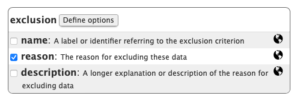
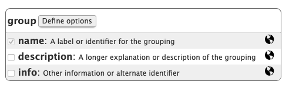

knitr::include_url("https://databrary.org/support/irb/release-levels.html")5 Demographic data
This page summarizes the demographic data currently reported by shared Databrary volumes.
Databrary analytics
Databrary maintains a website with information about the system’s users and data. The site can be found at:
https://databrary.github.io/analytics.
The data reported here are updated regularly, typically on a weekly or bi-weekly basis.
Data summarized here reflect the state of the Databrary system on 2023-08-31.
Release levels
By default, Databrary exposes certain variables to the public and hides others from public view. Who can see what files and variables is indicated by a set of labels and icons that apply system-wide called the “Databrary Release Levels”:
By default, all files uploaded to the system are assigned a Private release level.
Databrary spreadsheet
Researchers who are authorized by their institutions to access Databrary may curate their own datasets and add a number of types of data and metadata. These data are entered into, and visualized via a “spreadsheet” type of interface
knitr::include_graphics("include/img/databrary-ss-vol-8.png")
The virtue of using this spreadsheet interface is that the current Databrary system permits a comma-separated value (CSV) format file of the spreadsheet to be easily exported. Indeed, the databraryr package makes use of this feature, as does the analytics pipeline.
In the images below, the blue ‘checked’ variables are those the system presumes researchers will want to enter in the typical or default case. The grey ‘checked’ variables are generated internally by the Databrary system. For example, the ID variable is a system-wide-unique value for a specific research participant’s data.
(Human) participant data
When creating a new dataset/volume, the user is prompted to design a spreadsheet that is specific to the needs of their study. The following figure shows one of the “help” images associated w
knitr::include_graphics("include/img/databrary-ss-participant.png")
Most participant-level variables are shown to Public audiences (globe icon), with the exception of birthdate and disability.
Exact birthdates are shown only to Authorized Investigators or Affiliates with full Databrary access and from datasets (volumes) that have been fully shared.
Exact age
If a researcher provides a valid test date and a valid birthdate, the system automatically calculates an age in days.
Here is information about age data from shared Databrary volumes:
knitr::include_graphics("https://databrary.github.io/analytics/include/img/under-5y-hist-1.png")
knitr::include_graphics("https://databrary.github.io/analytics/include/img/5y-15y-hist-1.png")
Note: Databrary does not currently support entering age values directly.
Gender
Databrary does not currently use a standard vocabulary to collect information about participant gender, nor does the system support information about related measures like natal sex.
Nevertheless, there appear to be \(n=142\) volumes that report gender in some form. Here is a tabular summary of the values for the gender variable across those volumes:
knitr::include_url("https://databrary.github.io/analytics/participant-demographics.html#n-participants")Race
Some \(n=127\) shared volumes report information about race. Here is a tabular summary of the values for the race variable:
knitr::include_url("https://databrary.github.io/analytics/participant-demographics.html#n-participants-1")Note that the list contains some standard categories (OMB), but also a number of unique, non-standard, values.
Ethnicity
https://databrary.github.io/analytics/participant-demographics.html#n-participants-2
knitr::include_url("https://databrary.github.io/analytics/participant-demographics.html#n-participants-2")Note that the list contains some standard categories (OMB), but also a number of unique, non-standard, values.
Gestational age
The analytics report does not currently report data about the extent to which gestational_age is reported.
Pregnancy term
\(N=21\) volumes report pregancy term.
A summary table of the reported results shows that these are not standardized:
knitr::include_url("https://databrary.github.io/analytics/participant-demographics.html#n-participants-4")Birth weight
Only \(n=3\) shared volumes report birth weight. Here is a histogram of shared birth weights converted to pounds and ounces:
knitr::include_graphics("https://databrary.github.io/analytics/include/img/birthweight-hist-1.png")
Disability
Some \(n=86\) volumes report on disability. Here is a table of the reported values:
knitr::include_url("https://databrary.github.io/analytics/participant-demographics.html#n-participants-6")Language
Some \(N=111\) volumes report participant_language. Here is a table of the reported values:
knitr::include_url("https://databrary.github.io/analytics/participant-demographics.html#country")Country
Only \(n=2\) shared volumes report country. Here is a table summarizing that data:
knitr::include_url("https://databrary.github.io/analytics/participant-demographics.html#country")State
The analytics report does not currently report data about the extent to which state is reported.
However, the Play & Learning Across a Year (PLAY) Project has collected and will eventually report the U.S. States in which data was collected. This project is also exploring reporting more micro-level geographic data (e.g., county), and where participant (and IRB) permission exists, Census Block Group level data.
Other variables
The analytics report does not currently report data about the extent to which user defined variables like pilot status, exclusion criteria, task names, condition names, group names, context factors, or setting are reported in the Databrary spreadsheet. Most of these user-reported variables require additional metadata to be useful to others. Future work should focus on standardizing how that metadata is reported and incorporated into Databrary.
knitr::include_graphics("include/img/databrary-ss-pilot.png")
knitr::include_graphics("include/img/databrary-ss-exclusion.png")
knitr::include_graphics("include/img/databrary-ss-task.png")
knitr::include_graphics("include/img/databrary-ss-condition.png")
knitr::include_graphics("include/img/databrary-ss-group.png")
knitr::include_graphics("include/img/databrary-ss-context.png")
Tags and Keywords
Databrary supports attaching free-form tags and keywords to single participant datasets or entire volumes.
There are \(n=410\) unique tags and keywords. Here is a word cloud that depicts them:
knitr::include_graphics("https://databrary.github.io/analytics/include/img/unnamed-chunk-26-1.png")